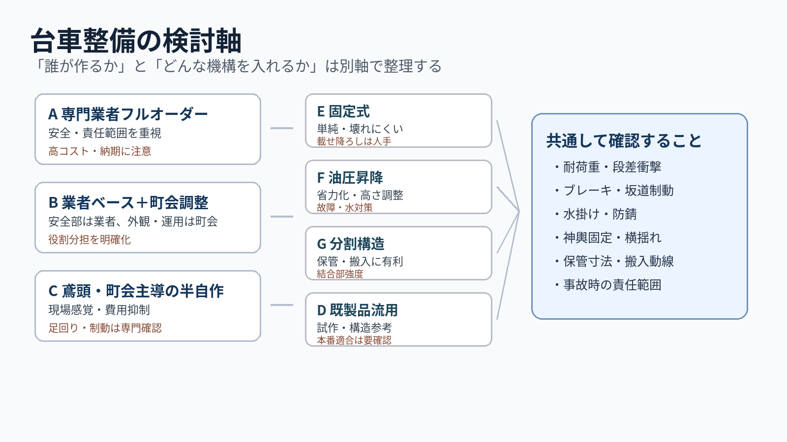
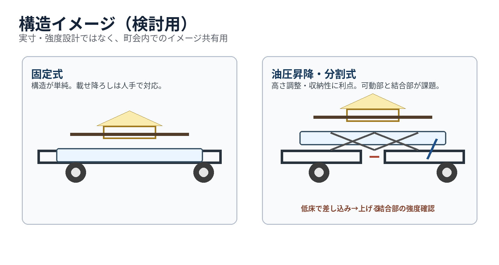

本資料は、永代二丁目大神輿の安全な運行、担ぎ手不足への対応、還幸時の負担軽減、神輿庫での保管性向上を目的として、台車整備の選択肢を整理するものです。特定案を決定するものではなく、町会内で比較検討するための資料です。
本資料の作成時点で、神輿本体の寸法・重量、台木装着時の外形、神輿庫の内寸はいずれも未実測です。したがって、耐荷重・保管性・昇降要否などの技術比較は仮定に基づきます。正式検討には実測データの取得が先行します。
正式検討にあたり、以下の実測が必要です：
なぜ台車整備を検討するのか：
※ 担ぎと台車を場面に応じて使い分ける運用も含め、複数の方式を比較します。

| 項目 | 確認内容 |
|---|---|
| 耐荷重 | 神輿本体・台木・装飾・段差衝撃に耐えられるか |
| 走行性 | 段差、凹凸、交差点、狭い道に対応できるか |
| 制動性 | 坂道や停止時に安全に止められるか |
| 固定方法 | 神輿や台木がずれない構造か |
| 水対策 | 錆、ベアリング、ブレーキが水掛けに耐えられるか |
| 保管性 | 神輿庫に収まるか。分割が必要か |
| 外観 | 幕や木部化粧で祭礼らしさを保てるか |
| 責任範囲 | 設計・製作・事故時の責任を明確にできるか |
| 費用 | 製作費、修理費、メンテナンス費 |
| 運用 | 誰が組立・押し引き・ブレーキを担当するか |
会議で検討を収束させるため、以下の順序で段階的に決定します。各ステップの成果物が次のステップの入力になります。
神輿本体・台木装着時・神輿庫・経路を測る → 寸法表・写真・経路メモ
常時台車か、還幸時のみか、長距離移動時のみかを決める → 運用方針
昇降、分割、防水、防錆、外観の要否を決める → 見積条件
概算費用を参考に検討上限を決める → 予算レンジ
複数業者に同一条件で見積依頼する → 見積比較表
見積結果と要件を照合し、フルオーダー・半自作・既製品流用等を決める → 実行案
以下は製作主体の軸で整理した選択肢。昇降・分割等の機能要件はいずれの調達方法とも組み合わせ可能です。
神輿台車や運搬台車の製作実績がある専門業者に、設計から製作まで一括して依頼する案。
安全性・完成度が高い
責任範囲が明確
保証・メンテナンス体制を確認しやすい
費用が高い
納期がかかる
業者依存になりやすい
参考：菅原護謨工業所、唐箕屋本店、ナダヨシ
安全に直結する部分（フレーム、車輪、ブレーキ）は業者に依頼し、外観や運用は町会側で調整する案。
安全部分は業者、外観・運用は町会で調整可能
鳶頭の現場感覚も反映しやすい
役割分担を書面化しないと責任が曖昧になる
参考：唐箕屋本店、菅原護謨工業所
町会内の鳶頭を中心に設計・製作を主導する案。車輪・ブレーキ・金属加工などは専門部品・業者の活用を前提とする。
現場感覚を反映しやすい
費用を抑えられる可能性
修理・改造もしやすい
台車設計・溶接強度・ブレーキは専門外の可能性
町会としての説明責任が重くなる
足回り参考：シシク、中部産業
既製の重量物用台車やハンドリフターをベースに検討する案。実用というより、試作・機構確認向き。
試作・検証がしやすい
部品調達が容易
祭礼用ではないため、水・段差・人混みへの適合を別途検証する必要あり
参考：中部産業の昇降台車
※ ナダヨシは構造参考として掲載。現在の神輿台車の受注可否は要確認。
調達方法とは別軸の機能・構造の選択肢です。互いに排他ではなく、組み合わせ可能です（例：固定式＋分割構造、油圧昇降＋一体型など）。

台面の高さが固定。載せ降ろしは人力。
構造が単純で壊れにくい
費用を抑えやすい
水掛けにも比較的強い
載せ降ろしに人手が必要
保管時に高さが合わない可能性
足踏み油圧またはジャッキで台面高を調整。
載せ降ろし・保管時の高さ調整に有効
少人数での運用が可能
費用増
油圧部分の故障リスク
水掛け時のシール劣化
重心が高くなるため安定性に注意
前後分割または左右分割で搬入・保管。
神輿庫の入口・内部寸法に制約がある場合に有効
部品単位で扱いやすい
結合部の強度・ガタつき
組立に時間と工具が必要
分割せず一体で保管・運用。
結合部がなく剛性が高い
組立不要
保管スペースを大きく占有
搬入口の寸法制約を受けやすい
大人神輿用台車の費用は個別見積が基本です。以下は公開事例・類似仕様・一般的な特注台車の価格感をもとにした概算目安であり、正式検討には必ず相見積もりを取ってください。
鉄フレーム、大径エアレス車輪×4、ストッパー、滑り止めゴム。幕・化粧なし。
ステンレスフレーム、レバー式ブレーキ、浮き上がり防止クランプ、紫幕・町会紋など。
上記＋足踏み油圧昇降、防水シール処理、分割構造、木部化粧等。
キャスター・車輪を専門メーカーから調達し、フレームは町会側で製作。ただし安全検証費用は別途。
※ 神輿サイズ・重量・仕様により大きく変動します。半自作の場合は、試験・保険・補修費用も予算に含めて検討してください。
自作・半自作は費用を抑えられる反面、設計・製作・試験・事故時対応の説明責任が町会側に残りやすくなります。「危険部分をどこまで専門家に任せるか」を明確にすることが重要です。
| 確認項目 | 内容 | 未確認時のリスク |
|---|---|---|
| 設計責任 | 誰が寸法・耐荷重・構造を決めるか | 構造破損時に責任の所在が不明 |
| 金属加工 | 溶接やフレーム製作を誰が行うか | 溶接強度不足による走行中の破断 |
| 足回り | 車輪径、耐荷重、材質、防水性 | 段差での車輪破損、水掛け後の固着 |
| ブレーキ | 坂道・停止時に安全に止められるか | 坂道での暴走、人身事故 |
| 固定方法 | 神輿や台木がずれないか | 走行中の神輿の落下・転倒 |
| 試験 | 重り試験、段差試験、坂道制動試験 | 本番で初めて不具合が発覚 |
| 記録 | 試験結果を写真・動画で残すか | 事故時に安全配慮を説明できない |
| 保険・責任 | 事故時に町会として説明できるか | 賠償対応・説明責任が重くなる |
| 項目 | 確認内容 |
|---|---|
| 神輿寸法 | 本体寸法、台木装着時の全長・全幅・高さ |
| 重量 | 神輿本体、台木、装飾を含めた概算重量 |
| 使用環境 | 水掛け、段差、坂道、橋周辺、狭い道 |
| 使用方法 | 常時使用か、還幸時のみか、長距離移動のみか |
| 車輪 | 大径、ノーパンク、ウレタン、ゴム、エアレス等 |
| ブレーキ | 手元レバー式、足踏み式、車輪ロック式等 |
| 昇降 | 油圧あり、ジャッキ式、昇降なし |
| 分割 | 一体型、前後分割、左右分割 |
| 防錆 | ステンレス、溶融亜鉛メッキ、塗装等 |
| 外観 | 紫幕、紅白幕、町会紋、木部化粧 |
| 保管 | 神輿庫入口、奥行き、高さ、分割時寸法 |
| メンテナンス | 点検、部品交換、故障時対応 |
| 論点 | 確認内容 | 対応Step |
|---|---|---|
| 使用場面 | 常時使用か、還幸時のみか、長距離移動時のみか | Step 2 |
| 担ぎとの関係 | どの場面は担ぎ、どの場面は台車にするか | Step 2 |
| 油圧昇降 | 必要か、不要か、試作するか | Step 3 |
| 分割構造 | 必要か、不要か | Step 3 |
| 外観 | 幕、町会紋、木部化粧をどうするか | Step 3 |
| 予算 | 検討対象とする上限額 | Step 4 |
| 相見積もり | 何社に声をかけるか | Step 5 |
| 自作範囲 | 町会・鳶頭で行う部分と業者に依頼する部分 | Step 6 |
| 試験運用 | 本番前にどの試験を行うか | Step 6 |
会議での使い方：この資料では結論を出さず、まず「実測」と「使用場面」を合意する。その後、油圧・分割・外観・予算の順に絞り込む。
以下は公開ページの参考情報です。永代二丁目大神輿にそのまま適用できるとは限りません。詳細は各リンク先をご確認ください。
※ 油圧昇降は「神輿台車の実例」ではなく、機構参考として扱います。実装する場合は荷重、重心、水対策、故障時対応を個別に検討してください。
| 分類 | 名称 | リンク |
|---|---|---|
| 神輿台車 | 菅原護謨工業所「神輿曳台車」 | sk56pro.com |
| 神輿台車 | 唐箕屋本店「お神輿の台車」 | tomiyahonten.com |
| 構造参考 | ナダヨシ「神輿台車」 | nadayoshi.co.jp（受注可否要確認） |
| 足回り | シシク「神輿台車」 | sisiku.com |
| 足回り | 中部産業「山車・神輿向けキャスター」 | chubu-sangyo.co.jp |
| 油圧機構 | 中部産業「昇降台車／リフター台車」 | chubu-sangyo.co.jp |
※ 実例画像・リンクは仕様検討の参考です。転載・対外配布時は出典元の利用条件を確認してください。